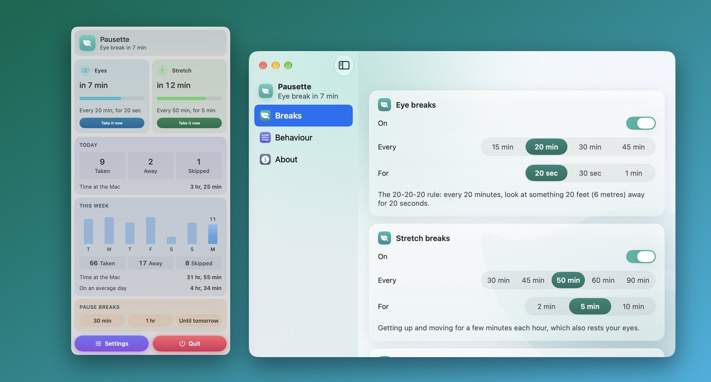
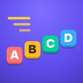

Pausette
Odihnește-ți ochii. Întinde-te. Apoi înapoi la treabă.

Ce face
Pausette stă în bara de meniu ca un mic inel care se umple până la următoarea pauză. Când vine vremea, întâi te întreabă blând, apoi estompează ecranul pentru pauza propriu-zisă, cu o numărătoare inversă și o idee despre ce să faci în acest timp.
- Pauze pentru ochi: regula 20-20-20. La fiecare douăzeci de minute, douăzeci de secunde în care privești ceva departe.
- Pauze de întindere: la fiecare cincizeci de minute, câteva minute ca să te ridici și să te miști, cu mișcări simple, pas cu pas. Amândouă pot fi schimbate sau dezactivate.
- Contează doar timpul la Mac. Pleacă de lângă el cât durează o pauză și asta contează drept pauză, așa că nu te întorci niciodată de la prânz la un memento.
- Așteaptă să se termine apelurile tale. Cât timp un microfon e folosit, pauza așteaptă până se termină apelul. Pausette vede doar că un microfon este folosit, niciodată ce aude.
- Așteaptă în timpul videoclipurilor și prezentărilor pe tot ecranul. Cât timp aplicația din față umple ecranul, o pauză scadentă așteaptă până ieși din modul ecran complet. Pausette vede doar că aplicația din față umple ecranul, niciodată ce apare pe el.
- Nu te încurcă niciodată. Orice pauză poate fi amânată sau omisă, iar Esc o încheie întotdeauna.
Necesită macOS 14 Sonoma sau o versiune ulterioară.
Ziua de azi și săptămâna aceasta, dintr-o privire
Fă clic pe inel ca să vezi când vine fiecare pauză, să iei una mai devreme, să suspenzi pauzele pentru o jumătate de oră sau până mâine și să vezi câte pauze ai luat, câte s-au petrecut de la sine cât ai lipsit și de cât timp stai azi la Mac. Cardul Săptămâna aceasta arată pauzele din fiecare dintre ultimele șapte zile și timpul tău la Mac.
Confidențialitatea într-un paragraf
Pausette observă doar trei lucruri: dacă folosești Mac-ul, dacă un microfon este folosit și dacă aplicația din față este pe tot ecranul. Nu are acces la rețea, cont sau urmărire, iar numărul de pauze din ultimele 30 de zile rămâne pe Mac-ul tău. Politica de confidențialitate completă spune același lucru mai pe larg.
Mai multe aplicații de la același autor
Aplicații mici, fiecare făcută să facă bine un singur lucru. Fără conturi, fără reclame și niciuna nu te urmărește.
 StatuetteCPU, memorie, disc și rețea în bara de meniu.Mac
StatuetteCPU, memorie, disc și rețea în bara de meniu.Mac TocketteUn timer la o singură tragere din bara de meniu.Mac
TocketteUn timer la o singură tragere din bara de meniu.Mac ZonetteToate fusurile orare care contează pentru tine, la un clic.MaciPhone și iPadAndroid
ZonetteToate fusurile orare care contează pentru tine, la un clic.MaciPhone și iPadAndroid LunetteLuna și Soarele, dintr-o privire.MaciPhone și iPadAndroid
LunetteLuna și Soarele, dintr-o privire.MaciPhone și iPadAndroid LunaretteCalendarul lunar, în patru tradiții.MaciPhone și iPadAndroid
LunaretteCalendarul lunar, în patru tradiții.MaciPhone și iPadAndroid PoisetteStai drept, cu un memento de la AirPods-urile pe care le porți.MaciPhone și iPad
PoisetteStai drept, cu un memento de la AirPods-urile pe care le porți.MaciPhone și iPad HushetteSunete ambientale calme, care nu se repetă niciodată.MaciPhone și iPadAndroid
HushetteSunete ambientale calme, care nu se repetă niciodată.MaciPhone și iPadAndroid TapsodySunete de tastatură mecanică în timp ce tastezi.Mac
TapsodySunete de tastatură mecanică în timp ce tastezi.Mac ThrumlinePulsul tău, live în bara de meniu.Mac
ThrumlinePulsul tău, live în bara de meniu.Mac NightjarȚine Mac-ul treaz. Pe bune.Mac
NightjarȚine Mac-ul treaz. Pe bune.Mac UmbretteEstompează tot, mai puțin fereastra în care lucrezi.Mac
UmbretteEstompează tot, mai puțin fereastra în care lucrezi.Mac PrompetteUn teleprompter chiar sub cameră.MaciPhone și iPadAndroid
PrompetteUn teleprompter chiar sub cameră.MaciPhone și iPadAndroid TalletteO bandă de hârtie pentru socotelile tale.MaciPhone și iPadAndroid
TalletteO bandă de hârtie pentru socotelile tale.MaciPhone și iPadAndroid ProbetteTot ce e tehnic despre un fișier media, în cuvinte.MaciPhone și iPadAndroid
ProbetteTot ce e tehnic despre un fișier media, în cuvinte.MaciPhone și iPadAndroid BindetteTransformă fișiere audio într-o carte audio ca lumea.MaciPhone și iPadAndroid
BindetteTransformă fișiere audio într-o carte audio ca lumea.MaciPhone și iPadAndroid LettretteDeschide fișiere winmail.dat și .msg exact cum au fost trimise.MaciPhone și iPad
LettretteDeschide fișiere winmail.dat și .msg exact cum au fost trimise.MaciPhone și iPad
Nhanh TayPune patru răspunsuri în ordine. Repede.MaciPhone și iPadAndroid PinetteNotițe pe care le ții la vedere.MaciPhone și iPadAndroid
PinetteNotițe pe care le ții la vedere.MaciPhone și iPadAndroid UsagetteLimitele de utilizare Claude în bara de meniuri.Mac
UsagetteLimitele de utilizare Claude în bara de meniuri.Mac SquiggoDesenează alături de un prieten drăguț.MaciPhone și iPadAndroid
SquiggoDesenează alături de un prieten drăguț.MaciPhone și iPadAndroid ForemanLucrări, oferte și facturi pentru meseriași.MaciPhone și iPadAndroid
ForemanLucrări, oferte și facturi pentru meseriași.MaciPhone și iPadAndroid TilewakeUn puzzle glisant ale cărui imagini se trezesc.MaciPhone și iPadAndroid
TilewakeUn puzzle glisant ale cărui imagini se trezesc.MaciPhone și iPadAndroid Chăm luyệnExerciții de școală primară în vietnameză, citite cu voce tare.MaciPhone și iPad
Chăm luyệnExerciții de școală primară în vietnameză, citite cu voce tare.MaciPhone și iPad